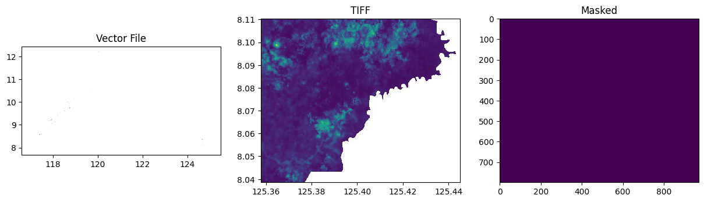

import geopandas as gpd
import matplotlib.pyplot as plt
import pandas as pd
import geowrangler2.vector_to_raster_mask as vrm
import geowrangler2.raster_to_dataframe as rdfRaster to Dataframe Tutorial
A basic introduction to Vector to Raster mask and Raster to Dataframe.
Basic Usage
Generate a raster mask from a reference TIF image based on the labels assigned to certain regions of the area. The generated raster mask can also be used to convert the raster to a dataframe with respect to their assigned labels.
Terms: * raster mask - processed image wherein some parts of it are set to no value or in other words hidden * labels - parts of an area within the satellite image are categorized as such. Examples are mining, agriculture, etc.
from rasterio import features
from rasterio.plot import show
from rasterio.windows import Window, transformLoad reference raster image and shape file
The shape file that should be loaded should contain a column that consists of labels.
tiff_file = "../data/vector_to_raster_mask_sample/cabanglasan.tif"
shape_file = "../data/vector_to_raster_mask_sample/labels_20220816.gpkg"
target_file = shape_file.replace("gpkg", "tiff")We create a dictionary of our target labels that we want to create a raster mask for.
labels = {
"mining": 1,
"neg": 2,
"agriculture": 3,
"product_extraction": 4,
"kaingin": 5,
"biophysical": 6,
}Generate raster mask
To create the mask we input the reference raster image, shape file with labels, and the dictionary with our target labels into the function.
# Generate masks for a file
masks, grids, values = vrm.generate_mask(
tiff_file=tiff_file,
shape_file=shape_file,
output_file=target_file,
labels_column="label",
labels_dict=labels,
plot=True,
)
Load rasters and the outputed raster mask
# no_test
tiff_files = [
"../data/vector_to_raster_mask_sample/cabanglasan.tif",
]
mask_file = "../data/vector_to_raster_mask_sample/labels_20220816.tiff"Convert raster to dataframe
To convert raster/s to a dataframe, we just need to input the images into the function and add the mask file. The mask file will be used to create the last column label in the dataframe. The result is a tabular dataset that contains the Band values per raster image and their labels.
data = rdf.read_bands(tiff_files, mask_file)data| B1_0 | B2_0 | B3_0 | B4_0 | B5_0 | B6_0 | B7_0 | B8_0 | B9_0 | B10_0 | B11_0 | B12_0 | label | |
|---|---|---|---|---|---|---|---|---|---|---|---|---|---|
| 0 | 0.1198 | 0.09635 | 0.09330 | 0.0698 | 0.10665 | 0.20250 | 0.2490 | 0.23525 | 0.28125 | 0.0377 | 0.19925 | 0.1002 | 0 |
| 1 | 0.1198 | 0.09580 | 0.09245 | 0.0708 | 0.10665 | 0.20250 | 0.2490 | 0.23925 | 0.28125 | 0.0377 | 0.19925 | 0.1002 | 0 |
| 2 | 0.1148 | 0.09420 | 0.09460 | 0.0707 | 0.10380 | 0.20395 | 0.2478 | 0.23150 | 0.27165 | 0.0385 | 0.18240 | 0.0902 | 0 |
| 3 | 0.1148 | 0.09190 | 0.08850 | 0.0631 | 0.10380 | 0.20395 | 0.2478 | 0.23300 | 0.27165 | 0.0385 | 0.18240 | 0.0902 | 0 |
| 4 | 0.1148 | 0.09350 | 0.09080 | 0.0643 | 0.10565 | 0.20830 | 0.2466 | 0.24205 | 0.26990 | 0.0385 | 0.18050 | 0.0894 | 0 |
| ... | ... | ... | ... | ... | ... | ... | ... | ... | ... | ... | ... | ... | ... |
| 775824 | 0.0000 | 0.00000 | 0.00000 | 0.0000 | 0.00000 | 0.00000 | 0.0000 | 0.00000 | 0.00000 | 0.0000 | 0.00000 | 0.0000 | 0 |
| 775825 | 0.0000 | 0.00000 | 0.00000 | 0.0000 | 0.00000 | 0.00000 | 0.0000 | 0.00000 | 0.00000 | 0.0000 | 0.00000 | 0.0000 | 0 |
| 775826 | 0.0000 | 0.00000 | 0.00000 | 0.0000 | 0.00000 | 0.00000 | 0.0000 | 0.00000 | 0.00000 | 0.0000 | 0.00000 | 0.0000 | 0 |
| 775827 | 0.0000 | 0.00000 | 0.00000 | 0.0000 | 0.00000 | 0.00000 | 0.0000 | 0.00000 | 0.00000 | 0.0000 | 0.00000 | 0.0000 | 0 |
| 775828 | 0.0000 | 0.00000 | 0.00000 | 0.0000 | 0.00000 | 0.00000 | 0.0000 | 0.00000 | 0.00000 | 0.0000 | 0.00000 | 0.0000 | 0 |
775829 rows × 13 columns
Checking the label column we can see that the TIF image that we converted does not contain the desired labels.
data["label"].unique()array([0], dtype=uint16)